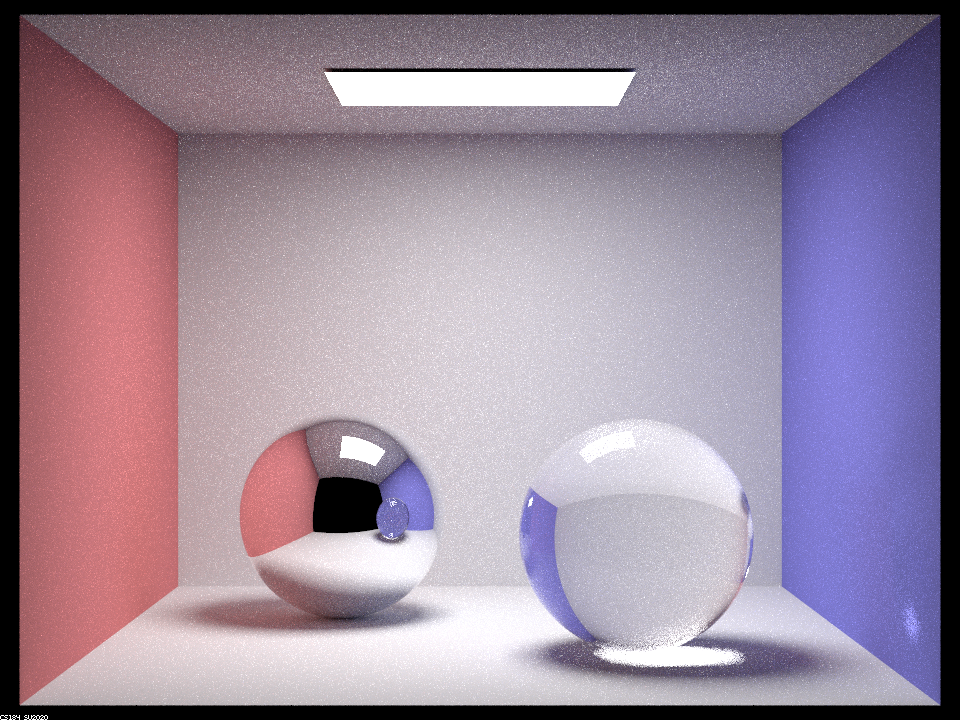
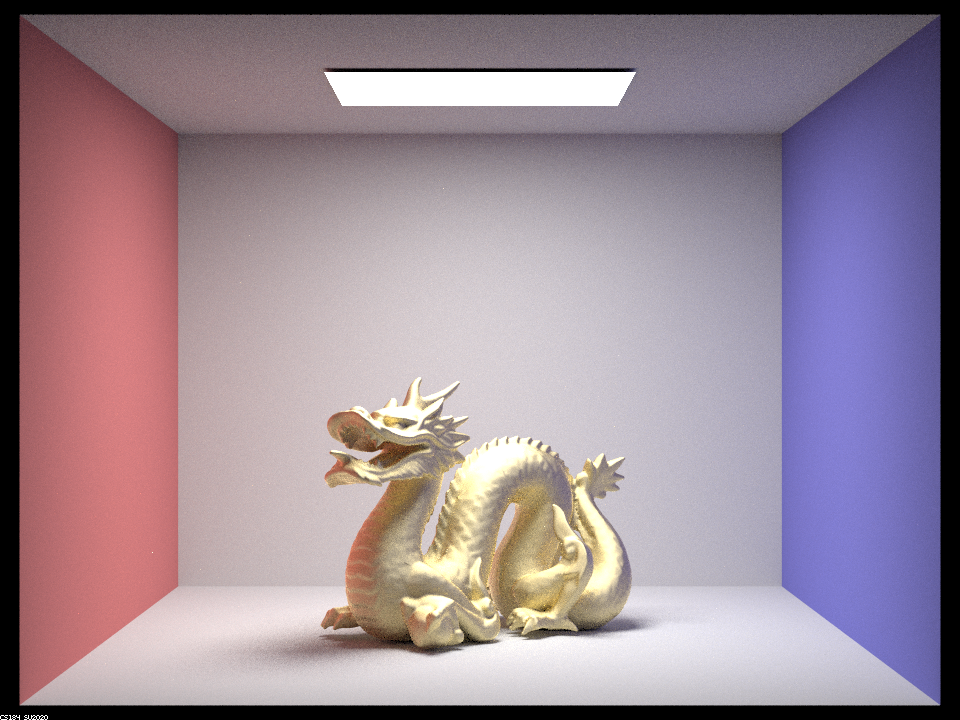

In this project, I have implemented the second part of Assignment 3, which extends the first half by allowing the program model objects with more realistic materials, such as mirror, glass and microfacet. Most problems that I encountered during implementation are related to dealing with the edge cases, such as validating the ray in relation to its normal vector, and small details in modifying specific values, such as keeping the track of positive / negative sign of cosine elements. For debugging them, I re-followed the provided instructions very carefully, which always helped me to correct the wrong line of codes. For grading, I worked on Part 1 and Part 2 of this project.
Part 1: Mirror and Glass Materials
Show a sequence of six images of scene CBspheres.dae rendered with max_ray_depth set to 0, 1, 2, 3, 4, 5, and 100. The other settings should be at least 64 samples per pixel and 4 samples per light.|
|
|
|
|
|
|

|

|
max_ray_depth = 0 only shows the 0 bounce light from the light source to the camera, and max_ray_depth = 1 shows the direct light (0 + 1 bounce light). Now the side walls and floor with ball shadows are visible. The left ball with mirror materials show bright reflected light from the light source, whereas the right ball with glass material shows less brightness in the reflected parts of the light source. This is due of the refraction; light is entering the glass material, and unlike a mirror material with perfect specular reflection, the light from the light source does not always get reflected to the camera with this material.
In max_ray_depth = 2, I start seeing the reflected light on the ceiling as well as the left ball with some texture. However, counting the number of bounces of light, the ceiling of the left ball texture is still black, encapsulating the scene from the previous setting (i.e. max_ray_depth = 1). About the right ball, on the right bottom edge, I see the light from the light source, which just finished passeing through the glass ball. Notably, the color bleeding effects start to appear; for the left ball, the light bounced off from the red wall is now creating a red cast in the shadow, and for the right ball, the light bounced off from the blue wall is now creating a blue cast in the shadow.
In max_ray_depth = 3, the right ball now also has some texture, showing the blue wall on the left side of the ball. Also, now the light finished passeing throught the glass ball and projected onto the floor. It is important to mention that there is still a dark edge at the right bottom of this ball. This is because the light has not yet bounce back from the floor to the ball. In contrast, for the left mirror ball, there is a bounce light from the floor, giving a hint of red to the shadow in the ball, showing the shadow from the previous step (i.e. max_ray_depth = 2).
In max_ray_depth = 4, the most notable change is the light hotspt on the blue wall, concentrated through the glass ball. This shows the bounced light from the left mirror ball, finished passing through the glass ball. The dark edge of the glass ball that I mentioned earlier is also gone, as the light from the floor is now projected back onto the bottom of the glass ball. Notice that this is the time when the left mirror ball starts showing the glass ball, instead of the black ball.
From max_ray_depth > 4, I stop seeing significant changes in the scene, except for some small changes, such as the slight increase in color bleeding effects from two walls, softened shadows, and the light reflecting back and forth within the glass ball (as the sparkles in the top of the glass ball from max_ray_depth=100 demonstrates).
Explain how these bounce numbers relate to the particular effects that appear.Here I show the examples of multibounce effects discussed above.
- 0 bounce : Light -> Camera
- 1 bounce : Light -> Wall -> Camera
- 2 bounce : Light -> Wall -> Mirror Ball -> Camera
- 3 bounce : Light -> Glass Ball In -> Glass Ball Out -> Floor -> Camera
- 4 bounce : Light -> Mirror Ball -> Glass Ball In -> Glass Ball Out -> Right Blue Wall -> Camera
Part 2: Microfacet Material
Show a sequence of 4 images of scene CBdragon_microfacet_au.dae rendered with α set to 0.005, 0.05, 0.25 and 0.5. The other settings should be at least 128 samples per pixel and 1 samples per light. The number of bounces should be at least 5. Describe the differences between different images. Note that, to change the α, just open the .dae file and search for microfacet.|
|
|
|
|

|
\(\alpha\) controls the roughness of the surface, and as we increase the value of \(\alpha\), the object becomes less specular. When \(\alpha\) is relatively small (e.g. \(\alpha=0.005\) or \(\alpha=0.05\)), the light from the light source are reflected by the dragon without much of the diffusion effects, generating a light sprinkles onto the walls, celing and floor. This effect is particularly visible when I render with few samples per light. But as I increase the \(\alpha\), the surface of the object tend to diffuse more and the issue of strong concentration of the reflected light disappears. This is also related to the texture at the back of the dragon's tail; when \(\alpha\) is small, there is not much highlight, but as \(\alpha\) increases, it gets highlighted more and more.
Show two images of scene CBbunny_microfacet_cu.dae rendered using cosine hemisphere sampling (default) and your importance sampling. The sampling rate should be fixed at 64 samples per pixel and 1 samples per light. The number of bounces should be at least 5. Briefly discuss their difference.|
|
|
The above images show the rendered results of two sampling methods: cosine hemisphere sampling and importance sampling with 64 samples per pixel and 1 sample per light. The result from cosine hemisphere sampling shows a darker dragon object, compared to the one from importance sampling, illustrating that it converges to the true solution so much slower than the importance sampling method. Cosine hemisphere sampling is a modified uniform hemisphere sampling method that instead samples a point on a disk, projects the point onto the upper hemisphere and finds the corresponding vector in 3D space. This method is suitable for importance sampling the diffuse BRDF, but as this part of the project defines the microfacet BSDF with the Beckmann distribution as its normal distribution function (NDF), the implemented importance sampling strategy rather focuses on the dirstributions of microfacets' normals. This sampling method is particularly effective when those distribution is concentrated.
Accordingly, if the surface materials diffuse more, there will be not much of the differences in rendered results from two sampling methods.
Show at least one image with some other conductor material, replacing eta and k. Note that you should look up values for real data rather than modifying them arbitrarily. Tell us what kind of material your parameters correspond to.

|
|
I changed the material of the CBdragon_microfacet_au.dae to silver (Ag) and replaced the existing \(\eta\) and \(k\) values with the corresponding ones at 614 nm, 549 nm and 466 nm, respectively. The resulting \(\eta\) is \([0.059193, 0.059881, 0.047366]\), and \(k\) is \([4.1283, 3.5892, 2.8132]\). I searched these values from this webpage, and the relevant plot for silver (Ag) is shown below.
|
|